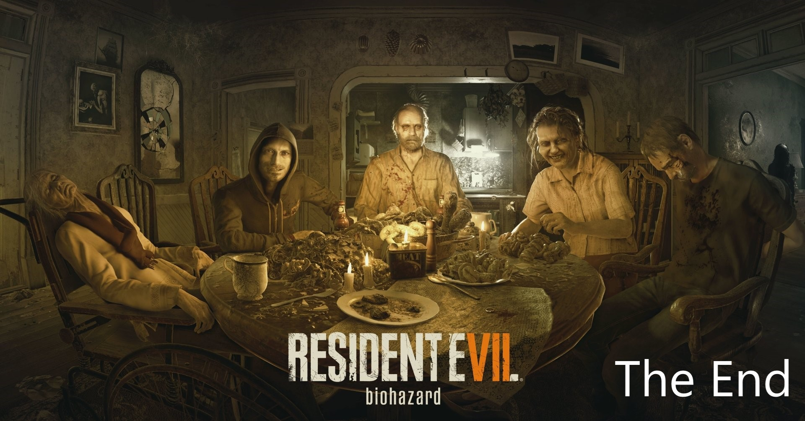

Defenition of the game
Resident Evil 7: Biohazard[a] is a survival horror video game
developed and published by Capcom,
released in January 2017 for Microsoft Windows, PlayStation 4 (for which it supports the PlayStation
VR
headset), Xbox One and in May 2018 for the Nintendo Switch in Japan. The ninth major installment in
the
Resident Evil series, Resident Evil 7 diverges from the more action-oriented Resident Evil 5 and
Resident Evil 6, returning to the franchise's survival horror roots, emphasizing exploration. The
player
controls Ethan Winters as he searches for his wife in a derelict plantation occupied by a cannibal
family, solving puzzles and fighting enemies. It is the first main series game to use a first-person
view.
Resident Evil 7 is the first full-length game to use Capcom's in-house RE Engine. The development
was
led by Koshi Nakanishi, director of the 2012 Nintendo 3DS game Resident Evil: Revelations. A year
prior
to its announcement at E3 2016, it was presented as a virtual reality demo called Kitchen. Resident
Evil
7 was considered a return to form for the series; critics praised the gameplay, graphics, and
design,
but criticized the boss battles and the final chapter. As of March 2020, the game has sold over 7.5
million copies worldwide. Two downloadable content scenarios, Not a Hero and End of Zoe, were
released.
A sequel, titled Resident Evil Village, is scheduled to be released in 2021.
The player controls Ethan Winters from a first-person perspective as he searches the
Baker house for
his missing wife.[1] Although Ethan is a civilian with few combat skills,[2] he is able
to arm
himself with a variety of weapons including handguns, shotguns, flamethrowers,
explosives and
chainsaws[3] against the Baker family and a humanoid form of fungus known as the
"Molded". He can
block attacks to reduce damage. Various sections of the game are spent being pursued by
members of
the Baker family, who, if engaged in combat, can only be temporarily incapacitated.
However, these
encounters are avoidable by means of stealth, or running away.[4][5]
Unlike Resident Evil 5 and Resident Evil 6, the gameplay emphasizes horror and
exploration over
action.[2][6] The inventory uses a grid-based system with an initial capacity of 12
slots, but may
be expanded several times over the course of the game. An item can occupy up to two
spaces, and four
items may be assigned to the D-pad. Item boxes found in save rooms may be used to manage
and store
items, and can be retrieved from different item boxes for later use.[4][7] Items in the
inventory
can be used, examined, or combined with other items to increase their usefulness.[8]
Many of the
game's puzzles require that items be examined under certain conditions in order to
reveal
secrets.[9] Tape recorders can be used to manually save the game's progress, which,
depending on the
given difficulty level, may require the use of a cassette tape.[4][10] Videotapes are
scattered for
Ethan to find, which place the player in the perspective of a different character, often
revealing
plot information or clues needed to solve a puzzle.[4][11] The PlayStation 4 version is
playable in
virtual reality using the PlayStation VR headset
plot
In June 2017, Ethan Winters is drawn to a derelict plantation in Dulvey, Louisiana, by a
message
from his wife, Mia, who has been presumed dead since going missing in 2014. He finds Mia
imprisoned
in the basement of a seemingly abandoned house, but she becomes violent and attacks him,
forcing him
to kill her. After receiving a call from a woman named Zoe offering assistance, Ethan is
attacked by
a revived Mia, who cuts his hand off. Jack, the patriarch of the Baker family, captures
Ethan. After
Zoe reattaches his hand, Ethan is held captive by Jack, his wife Marguerite, their son
Lucas, and an
elderly catatonic woman in a wheelchair. Ethan escapes but is pursued around the house
by
Jack, who
has powerful regenerative abilities. In the basement, Ethan discovers reanimated
monsters
known as
Molded. Zoe reveals that she is Jack's daughter, and that the family and Mia are
infected,
but can
be cured with a special serum. Ethan makes his way to an old house to retrieve the serum
ingredients, kills Marguerite, and has visions of a young girl. Lucas captures Zoe and
Mia
and
forces Ethan to navigate a booby-trapped barn to find them. Ethan chases away Lucas and
frees Zoe
and Mia. Zoe develops two serum doses, but they are attacked by Jack, now heavily
mutated;
Ethan
kills him using one of the serums.[4]
Ethan must choose to cure either Mia or Zoe. Choosing Zoe leaves Mia heartbroken,
despite
Ethan's
promise to send help. As he and Zoe flee on a boat, Zoe reveals that the Bakers were
infected after
Mia arrived with a young girl named Eveline when the wreck of a tanker ship washed
ashore.
Eveline
stops their escape by calcifying Zoe, killing her, and Ethan is knocked from the boat by
a
creature.
If Ethan chooses Mia, Zoe gives a bitter farewell to him and Mia. As he and Mia flee on
a
boat, they
come across the crashed tanker, where they are attacked by the creature and knocked from
the
boat.
Mia awakens after she was knocked off the boat and searches the wrecked ship for Ethan
while
experiencing visions of Eveline, who refers to Mia as her mother. Eventually, Mia's
memory
is
restored, revealing that she was a covert operative for a corporation that developed
Eveline
as a
bioweapon, codenamed E-001. Mia and agent Alan Droney were to escort Eveline as she was
transported
aboard the tanker; Eveline escaped containment, killed Alan, and sank the ship. She
infected
Mia in
an effort to force her to be her mother. Mia finds Ethan and gives him a vial of
Eveline's
genetic
material.[4]
If Ethan cured Mia, she resists Eveline's control long enough to seal Ethan out of the
ship;
if he
cured Zoe, Mia succumbs to Eveline's control and attacks Ethan, forcing him to kill her.
Ethan
discovers a hidden laboratory inside an abandoned salt mine. He learns that Eveline is a
bio-organic
weapon capable of infecting people with a psychotropic mold that gives her control over
her
victims'
minds, resulting in insanity, mutation, and superhuman regenerative abilities. Eveline
grew
up
obsessed with having a family, driving her to infect Mia and the Bakers and lure Ethan.
Lucas was
immunized against Eveline's control by her creators, The Connections, in exchange for
providing
observations on her. Using the lab equipment and Eveline's genetic material, Ethan
synthesizes a
toxin to kill her, and proceeds through tunnels that lead back to the Baker house. He
overcomes
Eveline's hallucinations, and injects Eveline with the toxin. She reverts to her other
form,
the
elderly woman in a wheelchair; Eveline has been rapidly aging since escaping. Eveline
mutates into a
large monster and, aided by the arrival of a military squad led by Chris Redfield, Ethan
kills her
with an anti-bioweapon pistol. Chris extracts Ethan (and Mia, if she survived) in a
helicopter
branded with the Umbrella Corporation logo.[4]
Not a Hero
BSAA agent Chris Redfield teams up with the now reformed Umbrella Corporation, also
known as
Blue
Umbrella, in order to apprehend Lucas Baker and uncover evidence on the mysterious group
that
created Eveline, called "The Connections". After rescuing Ethan Winters and sending him
away
on a
helicopter, Chris proceeds into Lucas' lab in the salt mine, where he accidentally runs
into
one of
Lucas' traps and has a bomb attached to his left wrist. Undeterred, Chris continues his
pursuit. He
tries to rescue several captured Umbrella soldiers, but they are killed by Lucas' traps.
Eventually,
Lucas activates a timer on Chris' bomb. Chris is forced to freeze the bomb in liquid
nitrogen,
disabling it long enough for him to remove it.
With the bomb removed, Chris battles his way through more of Lucas' Molded and traps. He
then finds
his way into a secret Connections research lab, where Lucas had killed all of the
Connections
researchers and plans to betray the organization. Chris manages to corner and shoot
Lucas,
which
triggers a mutation in his body. Chris battles and eventually kills the mutated Lucas,
and
stops him
from transferring all of his data on Eveline to an unknown party. With his mission done
and
Eveline's infection contained, Chris returns to the Umbrella base camp for an urgent
call.
End of Zoe
Following the path in the main game in which Ethan cures Mia instead of Zoe, Zoe wanders
into the
swamp and is apparently killed by Eveline; however, a pair of Umbrella soldiers find her
body and
discover she is still alive. They are ambushed by Joe Baker, Zoe's uncle, who lives in
the
Dulvey
swamps and has not been affected by Eveline's mold. Joe initially believes Umbrella is
responsible
for Zoe's condition, but a surviving Umbrella soldier claims they have a cure for Zoe
stored
in a
nearby shack. Joe goes to the shack, finding a partial cure, and returns to find the
Umbrella
soldier killed by a Molded.
Joe initially flees with Zoe on a boat to find the Umbrella base but is soon forced to
search for
the base on foot. A powerful and seemingly unkillable Molded called the "Swamp Man"
pursues
them
along the way. Joe and Zoe find the Umbrella base abandoned. They learn that the cure
has
been moved
to a nearby paddle boat. Joe boards the boat and, after encountering the Swamp Man once
again,
uncovers a full dose of the cure. The Swamp Man captures Zoe before Joe can administer
the
cure. Joe
gives chase into a heavily infected portion of the swamp and finds Zoe in an abandoned
church.
Inside, Joe is ambushed by the Swamp Man, who is revealed to be a heavily mutated Jack
Baker. Jack
knocks Joe unconscious and throws him into the swamp water to die.
Joe washes up near the Baker mansion and finds himself in the midst of a battle between
the
Molded
and Umbrella forces. He recovers an Umbrella power gauntlet and enters the mansion,
where he
successfully kills Jack and administers the cure to Zoe just as Umbrella reinforcements
arrive,
including Chris Redfield. Chris assures Joe and Zoe that they are there to help, and Zoe
is
fully
cured of her infection. She then receives a phone call from Ethan, and thanks him for
keeping his
promise to send help for her
development
Following the release of Resident Evil 6, Capcom conducted internal discussions regarding the
direction of the next installment. A preliminary version of the game, developed in 2013,
featured a more action-oriented gameplay, similar to that of Resident Evil 6. Taking inspiration
from the 1981 film The Evil Dead, the developers decided to scale back the game to one location
and use a first-person perspective to immerse players and return the series to its roots of
survival horror.[13][14] Development began around February 2014.[15] The game is built on a
custom game engine, named the RE Engine, which includes virtual reality (VR) development
tools.[16] The decision to make the game first-person was made well before VR was
considered;[12] VR development started in October 2015, for which a separate team was
created.[17] The introduction of VR demanded that textures be more detailed, discarding flat
textures and inaccurate object sizes that had previously been used.[18]
A year before the game's announcement, Capcom presented to attendants of E3 2015 a first-person
horror-themed VR demo, KI7CHEN, which ran on the same engine.[16][19] While Resident Evil 7 had
been in development long before, KI7CHEN was seen as an opportunity to evaluate how the RE
Engine and its VR capabilities would be received.[12] As a hint to the demo's relation to
Resident Evil 7, the logo of KI7CHEN had the letter "T" designed so that it resembled a "7", but
it went largely unnoticed.[15] In the company's Integrated Report of 2015, the Resident Evil
development division of Capcom was stated to focus on creating experiences for the VR market,
which included the new VR engine and games for the eighth generation of consoles.[20]
The game was directed by Koshi Nakanishi, who previously helmed Resident Evil: Revelations,
leading a development team numbering at about 120 staff.[13] For the first time in the series,
the narrative designer is a westerner—Richard Pearsey, writer of the two expansion packs of
F.E.A.R. and one of the narrative designers of Spec Ops: The Line.[21] At the time of the game's
reveal, development was around 65% complete.[15] Some of the creature models in Resident Evil 7
were first created in physical form – a number of them from actual meat – by make-up artists, to
then be scanned through the employment of photogrammetry. This technology developed over half of
the general assets of the game, but posed a problem in researching the setting of Louisiana
because its considerable demand for equipment made it unviable for transport, which required
Capcom to model by hand.[22] The game's score was composed by Capcom's lead composer Akiyuki
Morimoto, Miwako Chinone, and Satoshi Hori, with additional contributions from Cris Velasco and
Brian D'Oliveira.[23] Its theme song, an arranged version of the traditional American folk song
"Go Tell Aunt Rhody", was written by Michael A. Levine and performed by Jordan Reyne. Levine's
step-daughter Mariana Barreto was the original choice, but ended up doing the background vocals.
The song went through about 20 versions until completion.[24] A soundtrack was released
digitally by Sumthing Else Music Works alongside the game on January 24.[23]
My Game play
i enjoyed a lot playing this game here you can find how i choosed to play Residentevil7 so will you
watch my path ?
dont forget to share the vidieo if you like and comments and finaly subscribe to my channel
A Great Thanks for your behavior
Quizz about The Game
Click here to check the answers
Conctact us :
aelarbi17@gmail.com
